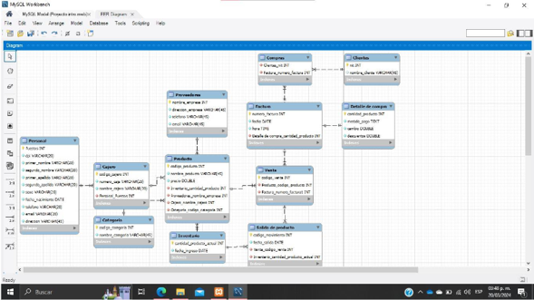
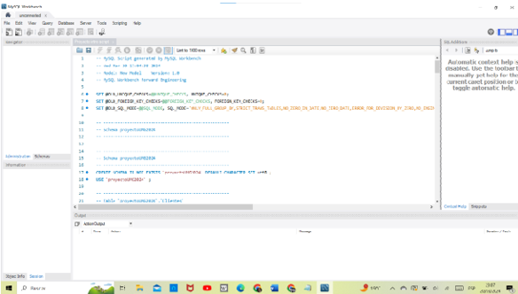
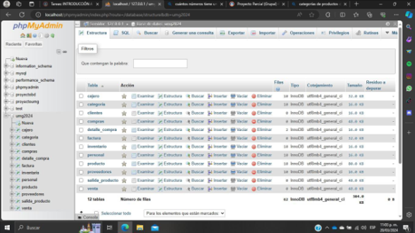

Video (Catedrático): MySQL, Relacionar Tablas, Importar Script, Exportar Script
Laboratorio Clase 12 - Insertar datos en MySQL
Proyecto Parcial (Grupal) 4- Base de datos - Parte Final
Creación del Diagrama Entidad-Relación (WorkBench) mínimo 12 tablas

Generación de Script de Base de Datos con todas las tablas (WorkBench)

Correr el Script de Base de Datos desde WorkBench o desde PHPMyAdmin
Insertar en las tablas principales o de operación 10 registros

Corrección de Proyecto (Grupal) 4- Base de Datos
Laboratorio Clase 13 - Backups Restaurar
...Volver